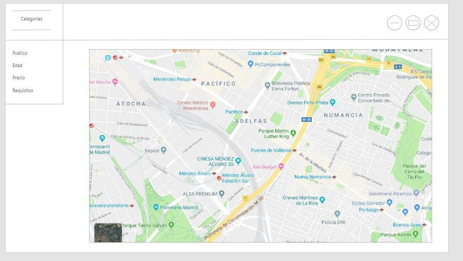

Con el fin de incentivar la oferta cultural y de ocio que ofrece el Ayuntamiento de Madrid, proponemos una aplicación que facilite la navegación y el descubrimiento de eventos de esta índole.
La aplicación consistirá en un servicio web el cual contiene un menú desplegable con las categorías de los eventos culturales actuales en Madrid, así como un mapa de la ciudad para consultar los más cercanos.La aplicación permitirá el filtrado de las ofertas en función del público objetivo, el tipo de evento, el precio, la franja horaria y la localización.
